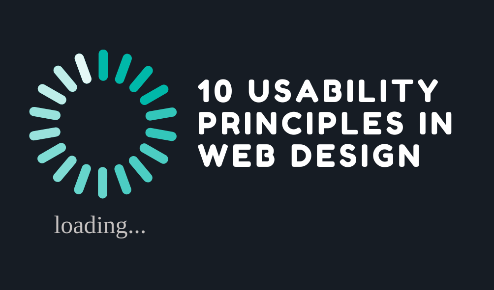
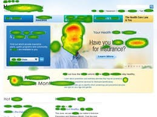

10 Usability Principles
Reference: 30 Usability Mistakes to be Aware of

1. The 2-Second Rule
The 2-second rule basically says that a user should not wait more than 2 seconds. I have heard a similar rule, stating that a user should not have to wait more than half a second! But the principle is clear: users want pages to load and update instantly. Most websites I visit are already like this. Only every now and then do I come across a website that takes more than a few seconds to load or process my request – and I do notice that increased latency. I have personally had problems with this one. When starting to build this website, I was importing several different fonts from Google and it always took about 7-10 seconds to load the home page which is of course unacceptable and will not do.
2. Fitts' Law
In terms of web design, Fitts’s law is all about the time required to move the cursor to the link so that one can click on it. To reduce that time, the distance to the link you want to be clicked must be in an expected place and have a large click area. I know I tend to use bigger buttons when using the web, but I do not think that is entirely because they are bigger. For example, I know LinkedIn wants me to invite my friends, so it puts that button to do so in an area where my cursor already was when I was logging in and they made the button to skip that part smaller and a color that popped less. Also, the buttons I use more, such as logging in or checking notifications are already at the top while the buttons or links I use less, such as the privacy policy, are at the bottom of the page. I imagine the most used sites have gone through a lot of user testing to find out exactly where to place their buttons!
3. Inverted Pyramid
A common practice of blog or news sites is to provide the summary of the topic (broad, long side of pyramid) in its title or brief description at the top of the page so the user knows if they should engage with that text to find out more details (point of pyramid). I have found this useful many times when I am trying to research a topic and I know where to look or where not to look based on the short description at the top. Websites that do that have gained my trust, and I aspire to have content like them.
4. Satisficing
This idea is about forsaking the best solution in the long run for what ever is good enough as fast as possible. Admittedly, I do this quite often. Instead of reading through my textbook and documentation for programming concepts, I’ll graze through Stack Overflow for whomever had the same problem as me and try to apply the solution as quickly as I can. This is a bad practice for sure, but I can understand why this is important in web design and how it can be implemented. Ideally, I would like to see and create content that provides the quick, easy answer at the top and a more detailed solution at the bottom if there are any issues – similar to inverted pyramid!
5. Don't Use Pop-Ups
I am all for this concept. They are the worst and very quickly ruin my experience. For some reason, cooking websites are notorious for this. I rarely go to a cooking/recipe website and not have to close out of pop-ups for ads and subscribing to an email list. I truly believe some websites make pop-up ads load a few seconds after the page so that I accidentally click on it right before I get to what I need. Those websites don’t care about the user.
6. Baby-Duck Syndrome
This concept says that people tend to like the first design they are exposed to and compare other designs to the first one. This can be rough if you have made your own custom design, but it can also make the process easier since no one visiting your website is on the internet for the first time. There are already standards to adhere to and lots of documentation and examples from which to work. But you must be aware of what is common for your website. This website, for example, is modeled after a combination of several very common websites and others that are known for tutorials. This was intentional to make it easy and comfortable for the user. I think I also tend to follow this principle when comparing websites. I sometimes imagine some sites to have the same layout as other ones because in my mind, I think that is how it should be! But what do I know? That probably sounds very experience centric.
7. Banner Blindness
This is such an interesting phenomenon! Banner blindness is where the user automatically overlooks banners (ads) placed on the page. I am sure this comes from experience since many sites have ads below the title of a page or in the margins, so peoples’ eyes know exactly where to look for navigation and content. I think this is such an intriguing development in usability because even though those advertisements are designed to capture attention, human eyes already know where the real content is at and what to ignore. And the fact that screens are small makes it so much more impressive!
8. Eye Tracking
The method of tracking where the eye is looking at on a web page is useful for determining how users search for information and how easy it is to find the main information on the page. Here is an example from usability.gov:

As you can see, the eyes spent the most time on the green, yellow, and red spots. I really like this kind of testing because it gets data that would be hard to skew. People will look based on where they know to look and what’s attractive, so if they don’t know what’s being tracked in a test like this, it could give great feedback.
9. Walk-Up-and-Use Design
These kinds of designs are great because they are so intuitive that you do not need to look around to try and figure out what to do or where to go. I think this stems from particular designs that are intuitive and well-known that people don’t question it unless they have not seen a website before. I also think this is more applicable to websites that do not have too many buttons and functionalities. One website I think of is Wikipedia. The home page is simply the icon and a search box. Then the articles on that site read like a book with a summary, table of contents, and easy-to-follow information.
10. Progressive Enhancement
Progressive enhancement, or PE, is the idea of building a website with basic functionality for all browsers and internet connections so that anyone can enjoy the functionalities of the website and then adding more after that for those whose computers and networks can handle it Essentially, it’s is designing the site in such a way that accessibility is not an issue. I personally find this very important because I would hate it if someone who doesn’t have the technology that I have is not able to use basic functions of a website. And those who do have better software can experience those functionalities and more. It is a considerate way of building websites.